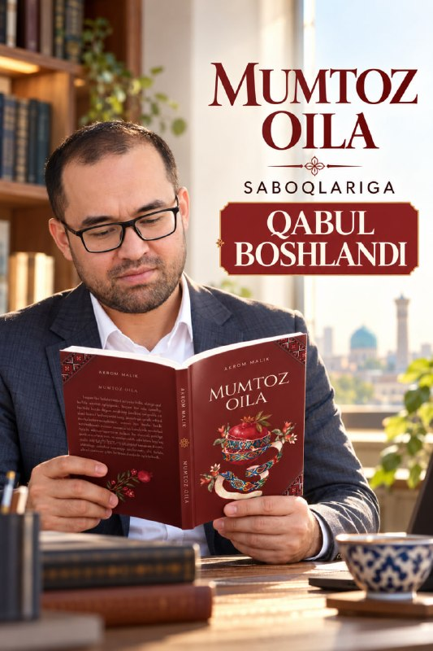

Xabaringiz bor: Akrom Malik yaqinda "Mumtoz oila" kitobini yozib tugatdi.

Xabaringiz bor: Akrom Malik yaqinda "Mumtoz oila" kitobini yozib tugatdi.
Ayni paytda kitob nashrdan chiqish arafasida.
Bundan tashqari to'liq ovozlashtirilib, e'tiboringizga havola etilmoqda.
Takliflardan kelib chiqib, Akrom Malik ushbu kitob asosida onlayn saboq berishga qaror qildi.
Darslar 2 oy davom etadi. Haftada bir marta bo'lib o'tadi. Jami 8 ta suhbat bo'ladi.
Barcha o'quvchilar onlayn shaklda yuzma-yuz qatnashadilar.
Har bir darsda ustoz kitob asosida ma'ruza qiladi.
So'ng o'quvchilarga topshiriq beriladi.
Ular bilan yuzma-yuz suhbat qilinadi.
Birinchi mavsum uchun 30 kishi qabul qilinishi rejalashtirilgan.
Birinchi dars 1-noyabr kuni yakshanba soat 20.00ga belgilangan.
Agar Sizga bu qiziq bo'lsa, ariza to'ldirishingiz mumkin:
👉 https://forms.gle/sCb8QVwrk4ARqJKZ6
Arizalar 20-oktabrgacha qabul qilinadi.
Ariza to'ldirganlarga aloqaga chiqiladi, suhbat qilinadi va ulardan 30 kishi birinchi mavsum uchun qabul etiladi hamda darsda qatnashish uchun guruh manzili beriladi.